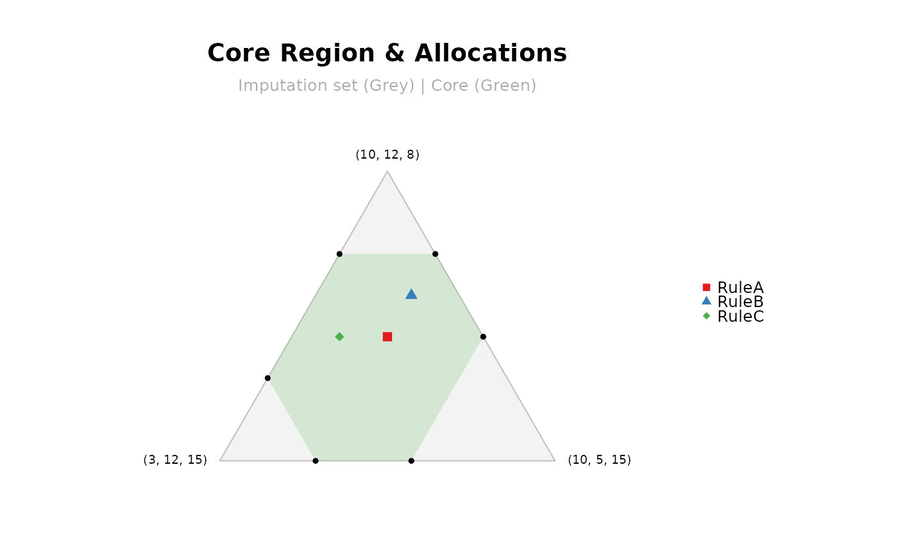

This function generates a geometric visualization of the core region and the imputation set for cooperative games with 2, 3, or 4 players. It also allows plotting multiple cost allocation rules simultaneously to visually check their stability.
Usage
mcstCorePlot(game = NULL, v = NULL, allocations = list(), titles = TRUE)Arguments
- game
list; an object containing a cooperative game (e.g., from
mcstGamePrivate). If provided andallocationsis empty, its allocation and solution concept are used by default. Default isNULL.- v
numeric vector; the characteristic function values \(v(S)\) for all \(2^n - 1\) coalitions, ordered by cardinality. Required if
gameisNULL.- allocations
list; a named list of numeric vectors representing different cost allocations to be plotted as points. Default is
list().- titles
logical; if
TRUE(default), adds a main title and subtitle/legend information to the plot.
Value
For \(n = 2\) or \(n = 3\), the function draws a base R plot.
For \(n = 4\), it returns an interactive plotly object containing the 3D visualization.
Details
The geometric representation of the core and the imputation set depends on the number of players \(n\):
\(n = 2\) players: the imputation set is represented as a 1D line segment where \(x_1 + x_2 = v(N)\). The core is highlighted as a sub-segment within it, delimited by individual rationality.
\(n = 3\) players: allocations are projected into 2D barycentric coordinates (simplex). The imputation set forms a large triangle, and the core is plotted inside as a bounded convex polygon.
\(n = 4\) players: the function switches to an interactive 3D plot using the
plotlypackage. The imputation set is drawn as a transparent 3D tetrahedron (mesh), and the core is represented as a solid 3D polytope inside it.
If an allocation lies inside the green core region, it means the allocation is coalitionally stable (no group of players has incentives to defect).
The function automatically extracts the default allocation if a game object is passed.
Alternatively, a custom named list of allocations can be provided to compare different
rules (e.g., Bird, Shapley value, folk) on the same graph.
See also
mcstCoreCheck for checking stability numbers and finding blocking coalitions.
mcstRules for an overview of the available rules and analysis tools in the package.
Examples
# Example 1
vvals1 <- c(10, 12, 15, 20, 22, 25, 30) # 3 players: v(1), v(2), v(3), v(12), ...
allocs1 <- list(RuleA = c(8, 10, 12), RuleB = c(9, 10, 11), RuleC = c(7, 11, 12))
mcstCorePlot(v = vvals1, allocations = allocs1)

# \donttest{
# Example 2 (interactive 3D plot)
vvals2 <- c(10, 10, 10, 10, 18, 18, 18, 18, 18,
18, 25, 25, 25, 25, 32) # 4 players: v(1), v(2), v(3), v(4), v(12), ...
allocs2 <- list(RuleA = c(8, 8, 8, 8), RuleB = c(10, 6, 11, 5))
mcstCorePlot(v = vvals2, allocations = allocs2)
# }